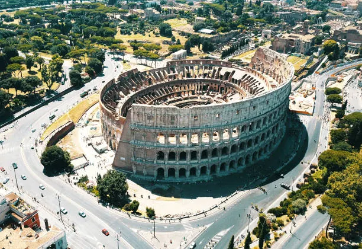
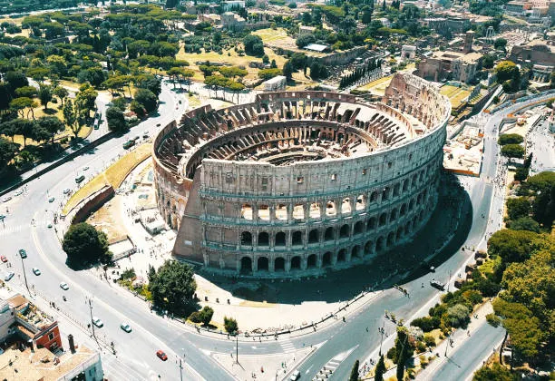

History
The Colosseum, located in the heart of Rome, is one of the most iconic monuments of the ancient world. Built between 70 and 80 AD during the reigns of Emperors Vespasian and Titus, it served as a grand arena designed to entertain the Roman population. Originally called the Flavian Amphitheatre, it could hold an estimated 50,000 to 80,000 spectators, making it the largest amphitheater ever constructed by the Romans.
The Colosseum hosted a wide variety of events, including gladiator battles, wild animal hunts, mock naval battles, and public spectacles. These events were used not only for entertainment but also as a way for emperors to gain popularity and showcase the power of the empire. The arena floor was built over a complex underground system called the hypogeum, which contained tunnels, cages, and elevators used to transport animals and fighters to the main arena.
Architecturally, the Colosseum is a masterpiece. Its outer walls are made of travertine stone and feature a series of arches supported by columns in the Doric, Ionic, and Corinthian styles. Although parts of it have collapsed due to earthquakes and time, much of the structure remains intact. Today, the Colosseum stands as a symbol of ancient Roman engineering and culture, attracting millions of visitors each year who come to witness the grandeur of this historic monument.
- Location: Rome, Italy
- Year Built: Construction began in 72 AD and was completed in 80 AD
- Civilization: Roman Empire
- Purpose: Used for gladiator fights, public spectacles, and entertainment
- Capacity: Around 50,000 spectators
- Material: Stone and concrete
- Famous Feature: The largest ancient amphitheater ever built and one of Rome’s most iconic landmarks